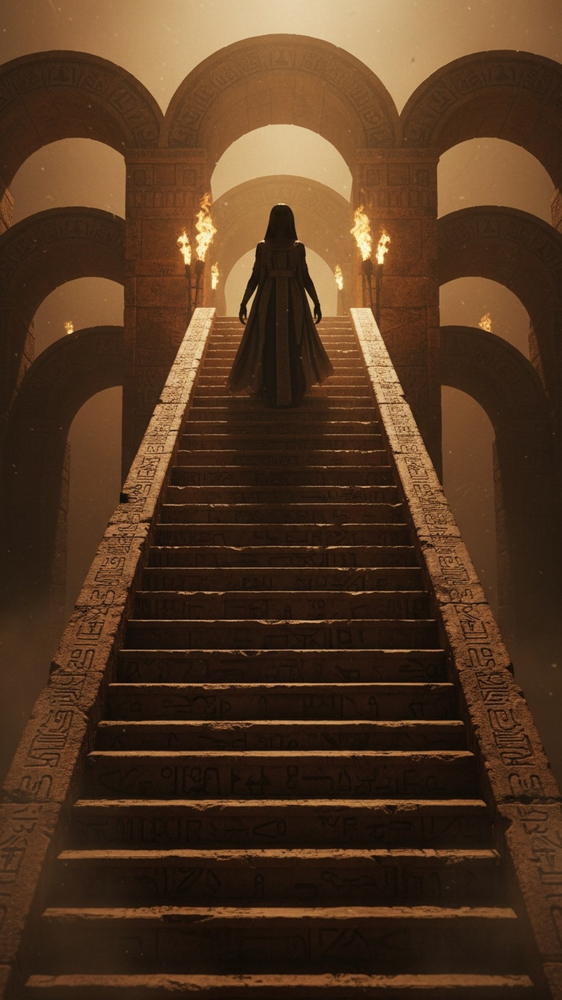

The oldest resurrection story in human history is about four thousand years old. The one who dies hangs dead for three days and three nights. On the third day, help is sent, and the dead one rises and returns to the world above. And the god in question was a goddess: Inanna, queen of heaven.
This is part 3 of THE BLUEPRINT, our 23-part investigation into the figures who carried pieces of the Jesus story before the story was told. Parts of this one are so close to the Gospel architecture that the clay tablets feel like a rough draft.

A poem older than Abraham
The Descent of Inanna was inscribed in Sumerian on clay tablets between roughly 1900 and 1600 BC, and the tablets themselves were excavated at Nippur, in modern Iraq. This is not a reconstruction or a guess. You can read the tablet lines in university translations today. It is the oldest dying-and-rising narrative known anywhere on earth, older than Abraham on any conventional chronology, older than every book of the Bible by a thousand years or more.
What the tablets say
Inanna, queen of heaven, descends to the underworld to confront her sister Ereshkigal, the queen of the dead. At each of seven gates she is stripped of one of her powers: her crown, her scepter, her royal robe, piece by piece, until she stands before her sister with nothing. She is judged, killed, and her corpse is hung on a hook. Some translators render the fastening word as nailed. She hangs there, dead, for three days and three nights.
Killed. Hung up. Three days and three nights. Risen on the third day. Pressed into clay two thousand years before Golgotha.
On the third day, the god Enki fashions two small beings and sends them down with the food of life and the water of life. They sprinkle it on the corpse. Inanna rises, and she returns to the world above, though the underworld demands a substitute, which is a story for our Tammuz chapter.
The number that would not die
Three days is not an obvious number. It is not a solstice or a moon phase. Yet it is the interval in the oldest resurrection text in existence, and it is the interval in the Gospels, and it appears again in the regional cults in between. Jonah spends three days and three nights in the fish, a text Jesus himself cites as the sign of his own coming burial. Hosea 6:2 promises that after two days he will revive us, on the third day he will raise us up. The motif was in Mesopotamian soil before Israel existed as a nation, and Israel spent its formative exile sitting in that soil.
The honest differences
We keep this series honest, so state the gaps plainly. Inanna is a goddess, not a male savior. Her death is not a sacrifice for humanity; it is a power confrontation between two goddesses, and her return requires a substitute rather than redeeming anyone. Nobody is claiming the evangelists sat with a Sumerian tablet open. The claim is narrower and harder to dismiss: the architecture of death, three days, revival by divine intervention, and return from the underworld was already ancient in the exact region whose exiled scribes shaped the Hebrew Bible.
When the women reach the tomb on the third day in the Gospel accounts, they are enacting the final scene of a story pattern whose oldest surviving copy was already two thousand years old, pressed into Mesopotamian clay by scribes who had never heard of Judea.
Did the Gospels borrow the number, or the entire architecture? That is the question we keep pulling on as THE BLUEPRINT continues. The next chapter follows the dying shepherd god whose mourners Ezekiel saw weeping inside the Temple itself.
This is Part 3 of 23 in THE BLUEPRINT, an investigation into the pre-Christian figures who carried the pieces of the Jesus story. See every part of the series here.
Before you go
7 books the Vatican doesn't want you reading. Free PDF — the texts they cut, with sources. Joined by 140+ Inner Circle members.
No spam. Unsubscribe anytime.
Go deeper
The Hidden Canon, Vol. I — Enoch. Jubilees. Thomas. Mary. Judas. 90 pages, 14 chapters, every receipt cited. The books your Bible quietly removed.
Read the Canon →Books that informed this investigation
- The Sumerians (Kramer)
- Babylon: Mesopotamia and the Birth of Civilization (Kriwaczek)
- The Ancient Near East (Hallo & Simpson)
As an Amazon Associate, Hidden Epoch earns from qualifying purchases. Cost to you: nothing.
Research safely
The VPN we use to research without being tracked. First 3 months free.
Get NordVPN →